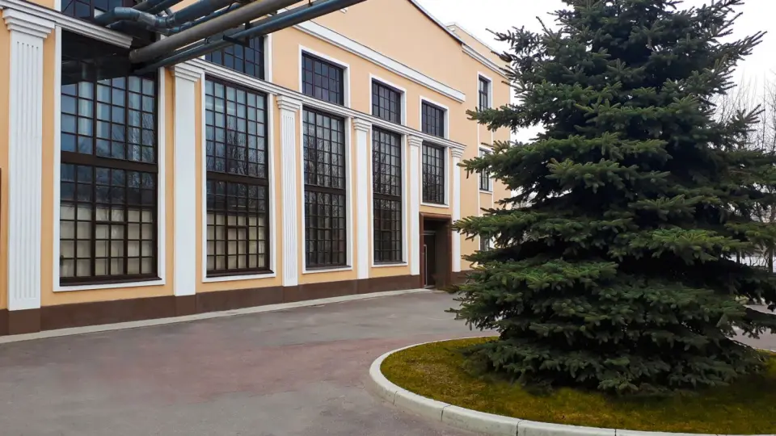
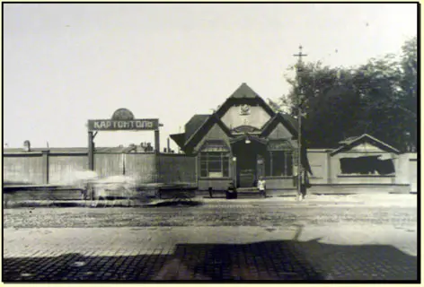
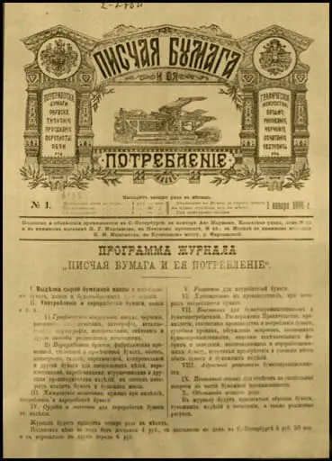
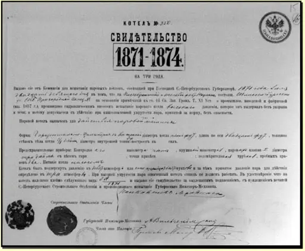
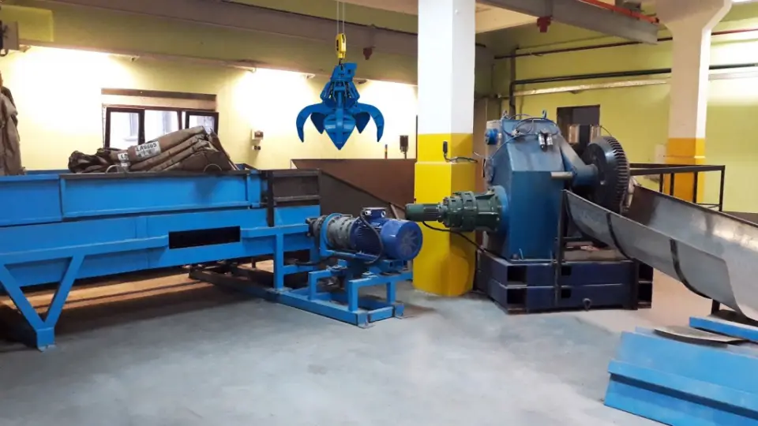

О заводе
ЗАО «Завод «Картонтоль» — одно из старейших предприятий Санкт-Петербурга. Производство начато 19 мая 1872 года на Шлиссельбургском шоссе, ныне проспект Обуховской Обороны. Сегодня завод делает товарный картон из макулатуры.
- Линии
- Две: коробочный картон; картон-основа для пергамина и бумага для гофрирования
- Сырьё
- Макулатура
- Режим
- Круглосуточное производство
- Сотрудники
- [нужны данные: в истории на сайте — 300 человек, в отчёте СОУТ — 180]

История
8 октября петербургский купец 2-й гильдии Август Вильгельм Науман просит разрешения открыть по Шлиссельбургскому шоссе писчебумажную и толевую фабрику. Этот день завод отмечает как День завода.
19 мая на фабрике начато производство.
Александр III утверждает устав «Товарищества картоннотольного производства „А. Науманъ и Ко“» с капиталом 300 000 рублей.
Науман начинает выпускать журнал «Писчая бумага и её потребление» — первое в России профессиональное издание писчебумажных фабрикантов.
Четыре паровые машины в 85 л. с. Из 30 000 пудов картона делают 35 000 кусков толя и 7 миллионов пассажирских билетов.
Фабрика Наумана — самое крупное в России предприятие по выпуску толя.
В феврале производство остановлено, в июне на фабрике пожар. В 1918–1919 годах фабрику национализировали.
Реконструкция: новая бумагоделательная машина, железнодорожная ветка и узкоколейка. В 1928–1929 годах завод выпускал 4000 т картона в год, перед войной — 10 000 т.
Бомбардировки: на территорию завода упали семь фугасных и две зажигательные бомбы.
Довоенный уровень производства превзойдён.
13 января зарегистрировано акционерное общество «Завод «Картонтоль».
Открыт цех переработки картона: флаторезка и продольно-резательный станок.
Новая вакуумная система картоноделательной машины КДМ-1. Перевооружение котельной: автоматика паровых котлов, водогрейный котёл, узел учёта газа.
Новый цех роспуска макулатуры: вертикальный гидроразбиватель до 160 т в сутки и грейферный кран.



Сырьё и экология
- Завод внесён в реестр утилизаторов РФ, номер записи В041-00113-77/03889050.
- Внесён в публичный реестр производителей товаров с использованием вторичного сырья, номер 2026-05-19/R-675.
- Состоит в Лиге переработчиков макулатуры.
- На заводе работают водооборот и локальные очистные сооружения, пыле- и газоочистка, идёт мониторинг в санитарно-защитной зоне.

Поставщикам
Завод покупает макулатуру и картонные гильзы. Стоимость сырья зависит от объёма и регулярности поставок.
Макулатура
- МС-1А, кипованная
- Отходы производства белой бумаги, кроме газетной
- МС-2А, кипованная
- Обрезки белой бумаги с линовкой, чёрно-белой или цветной полосой
- МС-5Б, кипованная и в навал
- Гофрированный картон, бумага и картон для его производства
- МС-6Б, кипованная
- Картон всех видов с печатью, кроме электроизоляционного, кровельного и обувного
- МС-7Б, кипованная
- Книги, журналы, каталоги, тетради на белой бумаге без переплётов и обложек
- МС-9В, кипованная
- Бумажные гильзы, шпули без стержней и пробок, втулки без покрытия и пропитки
- МС-13В, кипованная
- Картон, белая и цветная бумага, кроме чёрной и коричневой
Офисную бумагу и архивы принимаем на уничтожение с актами — без пластиковых папок и файлов.
Картонные гильзы
- d76,2 × 12 × 1045 мм
- d76,2 × 10 × 1045 мм
- d76,2 × 12 × 995 мм
- d76,2 × 10 × 995 мм
Пришлите коммерческое предложение с ценами и объёмами и пройдите тендер. Доставка гильз на завод — за поставщиком. Завод гарантирует своевременную оплату.
[нужны данные: куда присылать предложение по гильзам]
Работа на заводе
Вакансии завод публикует на hh.ru. Отдел персонала: +7 (812) 412-20-01, personal@kartontol.ru.